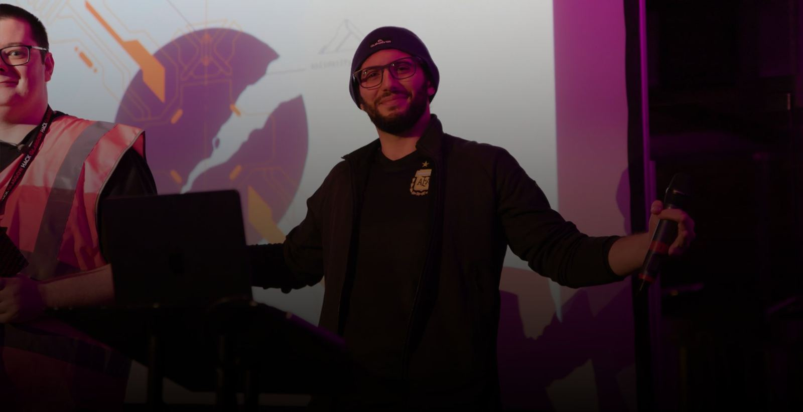

Conferences · Tech
Hack Glasgow 2027
- Dates
- Venue
- Citizens Theatre, Glasgow
- Location
- Glasgow, United Kingdom
- Format
- In-person
- Category
- Tech
- Industry
- Tech
- Official website
- https://hackglasgow.live/
About
Topics: infosec, hacking, community.
Official site: 247 attendees at the sold-out 2025 debut; 2026 nearly doubled (no exact figure). No organiser attendance figure found on the official pages checked. Ranked by estimate (estimated size band under 5,000; this band is a research estimate, not an organiser figure).
Sources
- Official — https://hackglasgow.live/